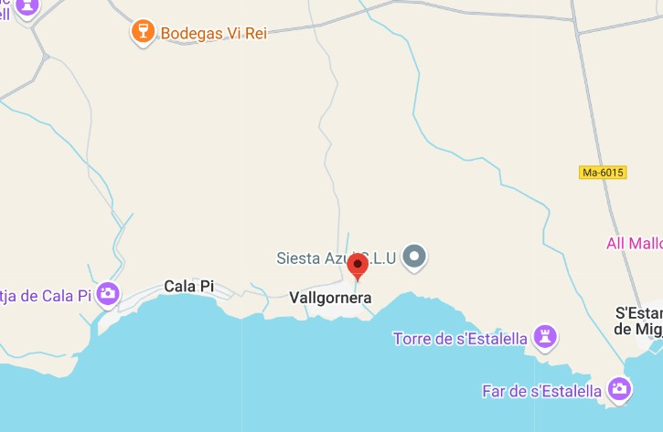

Descripció
Habitatge prehistòric situat en una cova natural, amb restes d’eines i ceràmiques.
Ubicació
La Cova des Pas es localitza a l'illa de Menorca, al terme municipal de Ferreries. Situada al Sud de l'illa i emmarcada al paisatge de barrancs que desemboquen a l'àrea penya-segat de la costa d'aquest sector meridional, disposa a uns 15 metres de la base del Barranc de Trebalúger i és visible des de la paret contrària. El separen de la costa una mica més de quatre quilòmetres en línia recta desembocant a l'est de Serpentona.

Imatges